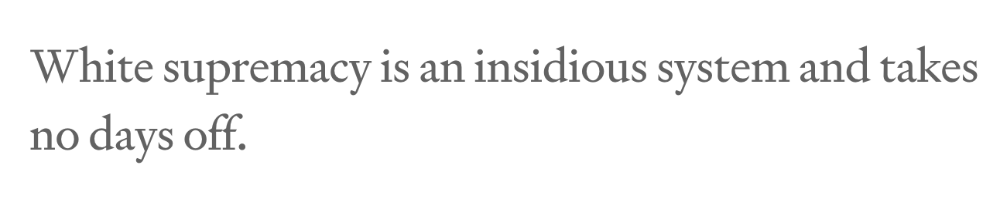
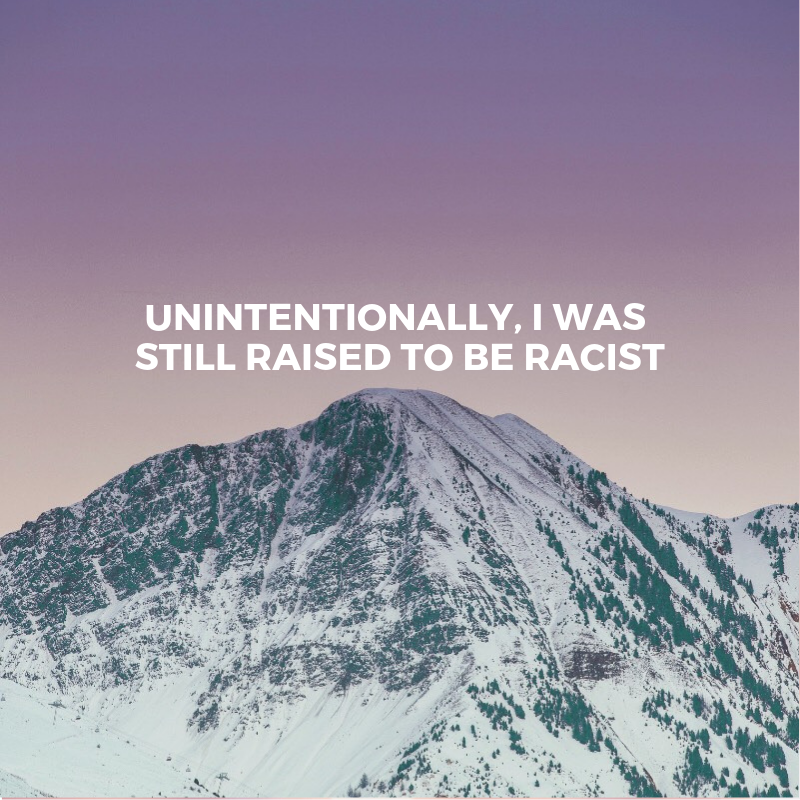
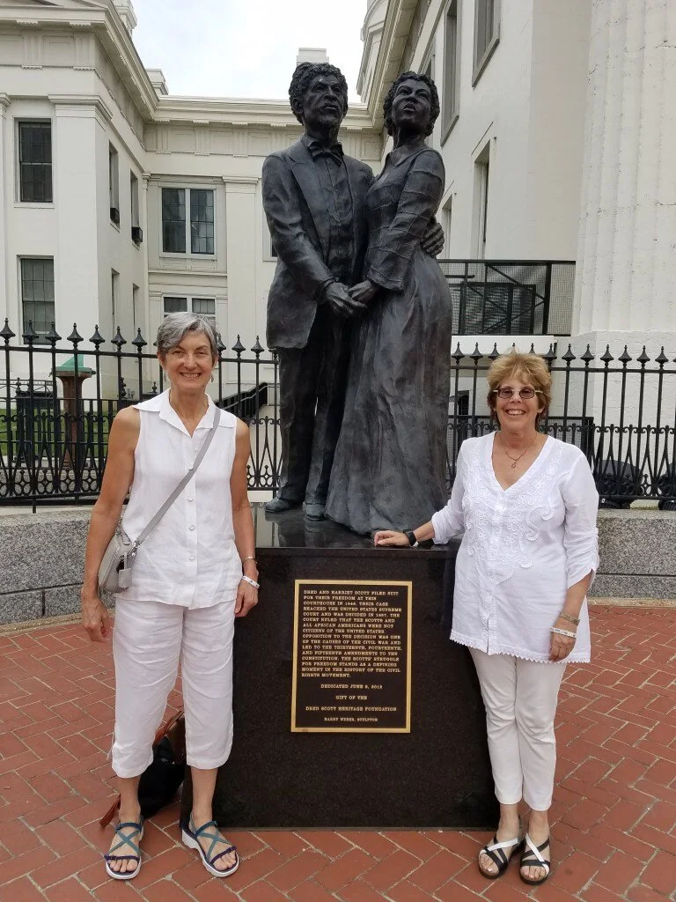
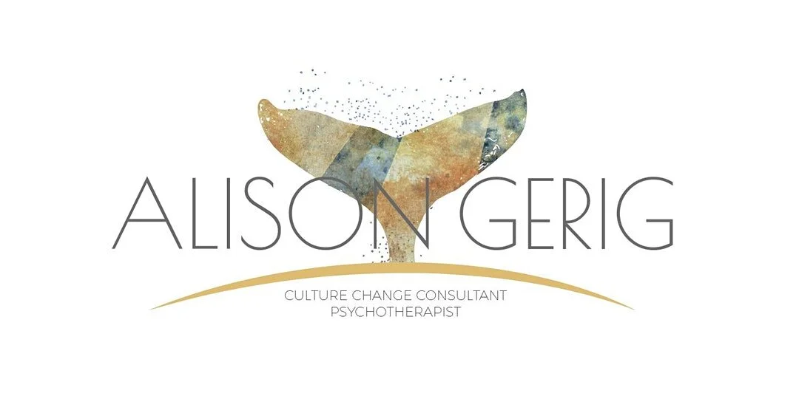

2019-12-14
Tis The Season To Make Reparations
As we celebrate the many Fall/Winter holidays, I pledge to acknowledge the debts I owe to the African descended people, to be more accountable and to find the courage to take real and meaningful action to make reparations. The following resources give examples of ways that we can begin to make reparations. I hope to see you on the journey with me.
-Robin

In the article, “How white people can be courageous, this holiday season,” the author, Renée Cherez, implores white people to be courageous this holiday season by not being complicit in upholding white supremacy. In my November blog, I pledged to do a land acknowledgment at Thanksgiving dinner and talked about the uncomfortable feelings and concerns that came up for me when thinking about doing it. Well, I did it and it was uncomfortable. To be totally honest here, I almost didn’t do it. It would have been so easy to just let it slide. Seriously, the pull was so present and real that it actually surprised me. I did it though and guess what? I survived. No one died, no one fainted, no one kicked me out of the family and the dinner went on. Sure, my 91-year-old Aunt did get a little upset, and one of my cousins made a joke, but they listened and a few even said thank you. With that said, the holiday season is far from over and I know that some of us may be thinking that the upcoming gatherings may not be the time to challenge white supremacy. Renée reminds us in this article, “White supremacy is an insidious system and takes no days off,” so we can’t either. Her words remind me that even my discomfort is a privilege and this article made it crystal clear to me.
Link to Article: https://medium.com/@reneecherez/how-white-people-can-be-courageous-this-holiday-season-67dc2239b508

At The People’s Institute for Survival and Beyond’s Undoing Racism and Community Organizing workshop, I learned that as a white person living in this country I am racist. That was hard to hear and it took some time to metabolize and move through the original feelings of shame and defensiveness that came up. As I continue to educate myself and others on what it means to be a white person in America this comes up all the time. Robin DiAngleo talks about it in her work and the author of this article takes it a step further by stating, “ I used to think that we are not born from the womb racist...but now that I am thinking about it, if we consider how intergenerational trauma works, we might be. Do we inherit intergenerational racism?” For me, this speaks most profoundly to my own internalized racial superiority, both the benefits and the profound loss that comes with it (the unearned privileges and the loss of my full humanity.) I continue to work on how to uphold these two truths in myself.
Link to Article: https://medium.com/@ekmonahan/unintentionally-i-was-still-raised-to-be-racist-constructed-fear-white-fragility-and-how-i-9c20437668e0
Embedded media (requires internet): //www.youtube.com/embed/dbKZlSwAS3M?wmode=opaque&enablejsapi=1
I saw this Netflix movie over the Thanksgiving holiday after a Woman of Color that I collaborate with recommended it. If you haven’t seen it, please do! The theme of this is unfortunately not new to me yet, the raw pain and dehumanization that it evoked were still excruciating. It can be so easy for me as a white person to disassociate from these feelings (especially when it involves any shame or guilt) by falling into the welcoming, “safe” arms of intellectualization and distancing. Thankfully, I am lucky enough to be in relationships and in community with people that hold me accountable when I start slipping into these manifestations of internalized racial superiority. Yet, I still do it and it takes constant vigilance to fight against it. Please watch this and feel it. We can’t afford to distance ourselves!
Embedded media (requires internet): //www.youtube.com/embed/Y3uNRdWfs_I?wmode=opaque&enablejsapi=1
Are you looking for more support to deal with your relatives over the holiday season? Franchesca Ramsey shares “5 comebacks for your racist relative during the Holidays” in this short humorous and helpful YouTube clip. I believe that humor can sometimes be a useful way to get folks to listen to and actually hear something that they might normally get defensive about.

The ultimate “gift” that we could give ourselves as white people is to truly understand, take responsibility for and be accountable for our debt. We owe reparations for kidnapping, murder, rape, theft and multiple other atrocities that were committed against African-descended people for over 400 years. When I’ve been asked to imagine a world in which racism no longer exists, it has been really challenging, if not impossible to picture. Reading this article was a wakeup call to the fact that I am not doing enough. It never ceases to amaze me how deeply white supremacy is baked into me and how easy it is to make excuses for my lack of action. I have had the chance to briefly meet the author of this article at a few networking events. I continue to hear really wonderful things about the racial literacy groups she co-facilitates with Rudy Lucas. I will be thinking about this quote from Christine Schmidt during this holiday season: “Monetary compensation alone won’t repair emotional and spiritual suffering. In addition to repayment for theft, my white debt for emotional and spiritual trauma begins with acknowledgment of intentional harm. It includes an apology and doesn’t require forgiveness.”
Link to Article: https://psychoanalyticactivist.com/2019/09/22/reparations-in-the-united-states-is-my-white-responsibility/

This resource is a workshop that a white antiracist therapist, friend and collaborator is hosting in Philadelphia this coming February. The title is “It's Always in the Field; Addressing Race as a White Therapist.” It’s an intensive workshop for white therapists wanting to address race and explore how white fragility shows up in their therapy work. I am so grateful to be in a community with Alison where we are able to learn from each other.
Link to Learn More: https://www.linkedin.com/posts/alison-gerig-0833586_addressing-race-as-a-white-therapist-activity-6608456230899892226-5_aM